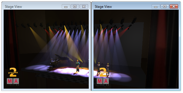
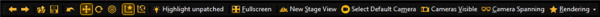
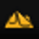

(Focus must be in the assert window)
(Focus must be in the assert window)


Spans the cameras in several stage views, in the full screen mode.
Example with two monitors:


The tool bar is located below the menu bar.
| Icon | Name | Function | Shortcut |
|---|---|---|---|
| Previous Selection | Selects previous selection. (Focus must be in the assert window) |
Alt + Left | |
| Next Selection | Selects next selection. (Focus must be in the assert window) |
Alt + Right | |
|
Load Show | Opens the load show window. | None |
| Save Show | Saves the show with the given filename. | Ctrl + S | |
| Oops | Undo the previous action. | Ctrl + Z | |
| Move | Turns on the move function. | Ctrl + M | |
| Rotate | Turns on the rotate function. | Ctrl + R | |
| Follow | Turns on the follow function. | Ctrl + F | |
| Object-Axis | Turns on the object axis function. | Ctrl + O | |
| World-Axis | Turns on the world axis function. | Ctrl + W | |
| Fullscreen | Opens the stage view on full screen. | Alt + Enter | |
|  | New Stage View | Opens a new stage view. | None |
|
Select default Camera | Selects the defined default camera | Ctrl + M |
| Cameras Visible | Displays the camera in the stage view as direction arrows. | F7 | |
| Camera Spanning |
Spans the cameras in several stage views, in the full screen mode. Example with two monitors: |
F8 | |
| Rendering | Opens the Rendering drop down. | None |